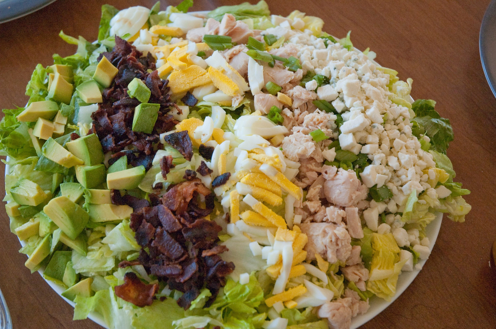

Odin Recipes
Cobb Salad

Description
A cobb salad is considered a main course that consists of lettuce, bacon, tomato, chicken, boiled eggs, and various other ingredients arranged in neat rows. While it's exact origins are unknown, it is widely believed to have been created in the late 1930's in Hollywood at the Brown Derby restaurant
Ingredients
- Meat: This recipe includes both bacon and chicken
- Eggs: Boiled eggs will be a good protein-dense addition to this salad
- Lettuce: Iceburg lettuce is normally what is used
- Tomatoes: Diced tomatoes add a bit of flavor and color to your dish
- Blue Cheese: Crumbled blue cheese will add a tangy twist
- Green Onions: Use red onion for a stronger flavor
- Avocado: Diced avocado will make your salad even more filling
- Dressing: Use your favorite brand of ranch dressing or make your own
Steps
- Boil, peel and dice the eggs.
- Cook, drain, and crumble the bacon
- Assemble all the ingredients together
- Drizzle the salad with dressing